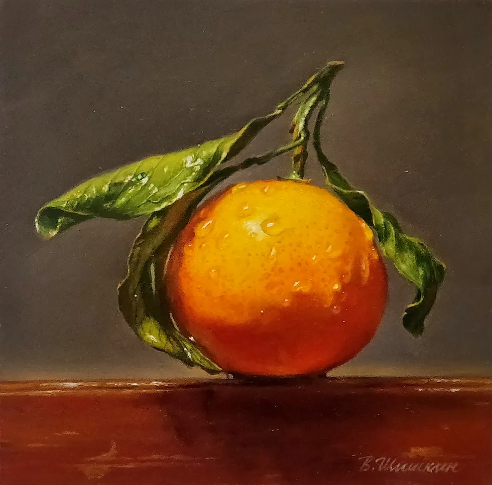
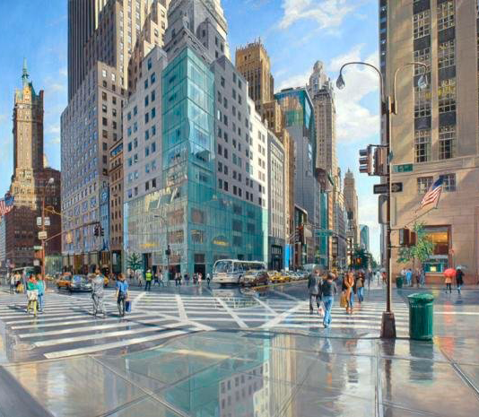
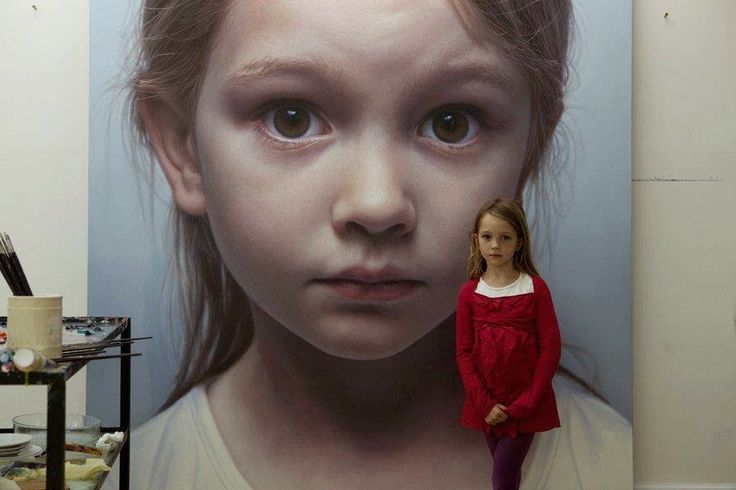

El movimiento del hiperrealismo, surgido en la década de 1960 en Estados Unidos y posteriormente extendido a Europa en los primeros años de la década de 1970, marcó un hito en la historia del arte contemporáneo. Los artistas de esta corriente se dedicaron a perfeccionar la técnica pictórica, centrándose en la representación de detalles con una precisión meticulosa que rivalizaba con la exactitud fotográfica. Esta obsesión por la perfección técnica llevó a los artistas hiperrealistas a explorar nuevas formas de capturar la realidad en lienzo. Cada pincelada se convertía en un intento minucioso de reproducir la textura, la luz y las sombras de los objetos y sujetos representados. El objetivo era ir más allá de la mera imitación visual y crear obras que desafiaran la percepción del espectador, haciendo que cuestionara la frontera entre lo real y lo representado. Sin embargo, este enfoque meticuloso también generó críticas. Algunos consideraron que la búsqueda obsesiva de la perfección técnica restaba vitalidad y emotividad a las obras, convirtiéndolas en meras reproducciones frías de la realidad. Surgió así un debate sobre la naturaleza misma del arte: ¿debe priorizarse la precisión técnica sobre la expresión emocional, o es esta última la verdadera esencia del arte?
Géneros del hiperrealismo
Retrato hiperrealista:

Se caracteriza por la meticulosa
representación de rostros y figuras
humanas,capturando cada detalle
con una precisión sorprendente
y creando una conexión intensa
entre el espectador y la obra.
Naturaleza muerta hiperrealista:
La naturaleza muerta hiperrealista se enfoca
en la reproducción de objetos inanimados ,
logrando una apariencia tan real que los
elementos parecen poder tocarse.
Paisaje urbano hiperrealista:
El paisaje urbano hiperrealista destaca por
plasmar ciudades y entornos urbanos con una
fidelidad asombrosa.
Escultura hiperrealista:

La escultura hiperrealista crea la ilusión de lo
real en arte tridimensional, modelando figuras
con detalles que desafían la percepción visual.
Fotografía hiperrealista:
El hiperrealismo, originado en la pintura, también
influye en la fotografía contemporánea, donde se
buscan imágenes que parecen reales.